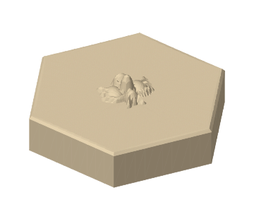
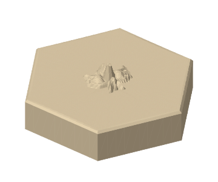
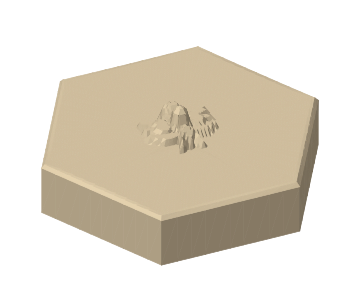

Small sculpture. Practical geometry.
The design choice: keep each insect compact, connected to the deck, and inside the same tapered envelope. A single circular recess then clears every insect, at any rotation. The wide underside rim carries the stack on the lower tile’s flat deck; delicate legs carry no stacking load.
These are real STL meshes, with automated geometry checks, but no physical print or fit test has been performed. The preview uses simplified meshes. Open the full-resolution STL in your slicer before printing.
Loading the simplified 3D meshes…
Download Rounded Queen bee STLThree families. Five creatures each.
Choose one family for a coherent set, or mix them: the socket is identical. Body shape, leg count, antennae and recessed marks provide monochrome cues. The spider is an arachnid with eight legs; the other creatures have six. Thin hairs, detached wings and unsupported antennae are deliberately absent.
01 / Rounded

Soft organic body segments, thick rooted legs and shallow body grooves. The starting choice for a tactile set.
02 / Faceted

Angular body footprints with broad geometric planes. Same anatomy and fit envelope, a sharper visual rhythm.
03 / Terraced

Relief heights grouped into 0.6 mm bands, like a miniature contour map. Steps narrow upward; their treads remain backed by material underneath.
These are three treatments of shared insect drawings, rather than three unrelated mechanical systems. The queen has wings and a small crown cue; the ant has a narrow waist; the beetle has a broad split shell; the grasshopper has bent hind legs; the spider has four leg pairs.
A universal negative, with a tiny roof.
Diameter assumption: 50 mm across opposing corners, which gives 43.30 mm across flats. The deck is 10 mm high, with relief reaching 5 mm above it: 15 mm total for every model. This chooses a 5 mm peak within the requested 3–8 mm range; the tapered legs and antennae are lower than 3 mm. The top outside edge has a 0.6 mm chamfer and the bottom edge a 0.3 mm chamfer.
The underside recess is 17.6 mm wide and 8 mm deep. Its walls close inward by 1 mm for each 1 mm of height: 45° from vertical. At the top, only a 1.6 mm span remains to bridge. There is at least 2 mm of material below the deck. A broad flat-bottom recess with a full-width ceiling would require a much larger bridge.
Fit calculation: at height h above the lower deck, every relief vertex satisfies radius + h ≤ 8 mm. The receiving cavity wall follows radius + h = 8.8 mm. This leaves 0.8 mm nominal radial clearance, about 0.57 mm normal to the sloping wall. The 120-sided socket approximation retains at least 0.797 mm radial clearance against the same envelope. The envelope is rotationally symmetric, so the nominal fit does not depend on which creature or style is underneath. The relief occupies roughly a 16 mm diameter area; enlarging the insect would require a deeper base, steeper overhang, or a larger bridge.
Stack pitch is 10 mm. A second tile’s bottom lands on the first tile’s deck, while the insect enters the recess. Two tiles are 25 mm tall; n tiles are 10n + 5 mm. The broad rim supports the upper tile. This is loose nesting with some lateral play, without a snap fit or an anti-rotation lock. Hex edges align at 60° increments.
The 45° walls and tiny bridge are intended to print underside-down without supports. Printer cooling, layer height and material still matter; Prusa’s modeling guidance describes overhang and tolerance limits. No support-free result is claimed as a physical test.
What Hive asks of a tile
Hive is John Yianni’s abstract strategy game, published by Gen42. Players build a shared cluster of hexagonal pieces and try to surround the opponent’s queen. There is no separate board. A base set has 11 tiles per player: one queen bee, two beetles, two spiders, three grasshoppers and three soldier ants. The beetle can climb onto other pieces, making stable stacking a gameplay requirement. See the official rulebook for placement, sliding restrictions, the One Hive rule and full movement rules.
| Creature | Per player | Movement summary | Original relief cue |
|---|---|---|---|
| Queen bee | 1 | One adjacent space | Wings, abdomen bands, crown cue |
| Soldier ant | 3 | Any distance around the outside | Three segments, narrow waist |
| Beetle | 2 | One space, including climbing | Broad shell and centre seam |
| Grasshopper | 3 | Jumps a straight occupied line | Long abdomen, folded hind legs |
| Spider | 2 | Exactly three spaces around the outside | Eight legs and rounded abdomen |
This study covers the five base types, without expansion creatures. The movement summaries omit restrictions; use the rulebook to play. These original reliefs do not reproduce the publisher’s tile illustrations or logo. This is an unofficial design exploration.
Single color means one filament per piece. Print the two players’ sets in different solid colors. Every insect is designed to remain distinguishable through shape and relief; no multicolor printer or painted icon is required. Fifteen model variants are supplied, but a base game needs 22 printed tiles using the quantities above.
Print two before printing twenty-two.
- Choose a family. Download two different insects and import the STLs in millimetres. Keep the cavity facing down and the insect facing up.
- Start with PLA, a 0.4 mm nozzle, 0.16–0.20 mm layers, 3–4 walls, 5 top/bottom layers and 15–25% infill. These are suggested starting settings, not tested profiles.
- Slice with supports off. Inspect the socket’s closing layers, the final 1.6 mm bridge, body grooves and leg widths. Confirm the slicer preserves the 15 mm height. Use elephant’s-foot compensation if needed.
- Print the pair. Check flat seating in all six hex orientations, easy separation and side-by-side sliding. Look for roof sag, rough cavity walls and thin or merged anatomy. Then test five tiles (all four beetles above another piece, 55 mm assembled height), including off-centre placement and lifting the top piece, before committing to a full set.
A calibrated printer should have room within the generous nominal clearance, but actual fit and tactile recognition remain unverified. If the pair rocks or the roof sags, tune cooling/bridging or edit the generator and print another pair. Do not scale only one tile: all models must keep the same socket and envelope dimensions.
Council design record
Both GPT-6.1 Sol primary council routes found the shared-socket proposal mathematically sound. Their main concerns were readability inside the compact tapered envelope and sideways play in the stack. The design keeps central bodies tall, legs low and attached, and a wide bearing rim. The faceted family uses planar body slopes; a small bottom chamfer reduces the sharp bed-facing edge.
The council’s OpenRouter Free advisory route also critiqued the proposal. Its objections to a 1.6 mm bridge and 10 mm stacking pitch were checked against the geometry: 1.6 mm is the short unsupported span, while the 10 mm pitch intentionally receives 5 mm of relief inside the next tile. Those objections did not require increasing the bridge or the pitch.
Design consultation and three implementation review rounds are complete. Both primary reviewers accept the finished version at 9/10; the advisory reviewer scored the final round 10/10. The reviews found and resolved a top-view camera issue, canvas clipping and an overstatement about untested recognition. No substantive objections remain for this unprinted prototype. Neither CAD checks nor council feedback substitutes for a physical test print.
| Delegate | Round 1 | Round 2 | Round 3 |
|---|---|---|---|
| GPT-6.1 Sol via Codex | 8.5/10 | 8.5/10 | 9/10 |
| GPT-6.1 Sol via OpenCode / CLIProxyAPI | 9/10 | 9/10 | 9/10 |
| OpenRouter Free via OpenCode / CLIProxyAPI (advisory) | no score; incomplete final response | 10/10 | 10/10 |
Automated validation: every full-resolution STL has 48,000 triangles, closed two-face edges, consistent winding, no degenerate faces, positive signed volume, Euler characteristic 2 and a 0–15 mm vertical extent. Relief vertices stay inside the common convex cone envelope; planar faces between them do too. See per-model validation results. These checks establish mesh properties and nominal clearance, not physical print quality or user recognition.
Sources & editable files
Sources checked 7 November 2026. Game facts come from the publisher; fabrication dimensions and style choices are this study’s design proposal.
- Gen42 — Hive: publisher, game overview and official product.
- Gen42 — official Hive rules: piece counts, movement, stacking and game restrictions.
- Prusa — Modeling with 3D printing in mind: overhangs, tolerances, print orientation and design practice.
- Prusa — Poor bridging: short unsupported spans and cooling.
- Download editable Python generator: standard library only; regenerate all meshes, previews, archive and geometry reports with
python3 research/hive-printable/generate.pyfrom the repository root.
From digital ideas to physical pieces. Return to the collection →